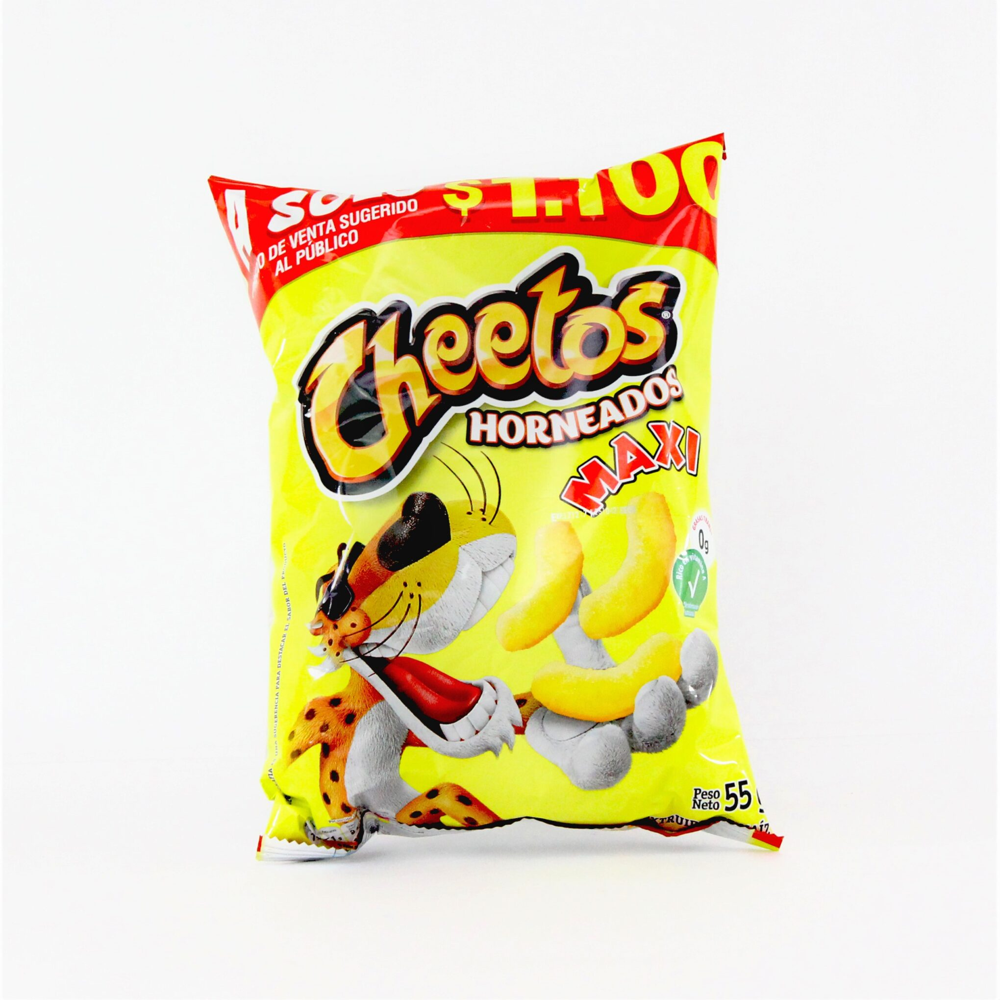

FRITURAS
 |
$2.800Paquetes y precios de de todito. Descubre donde los puedes comprar más económicos. De Todito es una marca de productos de dulces y pasabocas y paquetes. |
 |
$2.100El producto original fue hecho en la Casa de Fritos en Disneyland, en los años 60. Utilizando las tortillas de maíz sobrantes y tomando la idea original de los tradicionales totopos mexicanos, el restaurante propiedad de la empresa los cortó y los frió, para luego agregar el condimento básico, parecido a los chilaquiles mexicanos, pero en este caso, seco. Arch West fue el Vicepresidente de Marketing de Frito-Lay en ese momento, y notó su popularidad.4 Hizo un trato con Alex Foods en 1964, el proveedor de muchos artículos para Casa de Fritos en Disneyland, y las produjo por un corto tiempo regionalmente, antes de que estuviera abrumado por el volumen, y Frito-Lay movió la producción en la casa A su planta de Tulsa.5
Los "Doritos" fueron lanzados a nivel nacional en 1966, siendo el primer chip de tortilla que se lanzó nacionalmente en Estados Unidos.6
De acuerdo con Information Resources International, en 1993, Doritos ganó $ 1.2 mil millones en ventas al menudeo, un tercio de las ventas totales de Frito-Lay para el año. Sin embargo, en el rediseño más costoso en la historia de Frito-Lay, en 1994 la compañía gastó $ 50 millones para rediseñar Doritos para hacer las chips 20% más grandes, 15% más delgadas, y redondeó los bordes del chip. Roger J. Berdusco, vicepresidente de marketing, dijo que una de las razones principales del cambio fue "una mayor competencia de las tortillas de restaurante, que son más grandes y más fuertemente sazonadas".7 El cambio de diseño fue el resultado de un estudio de investigación de dos años que involucró a 5.000 comedores de chips. El nuevo diseño dio a cada chip esquinas redondeadas, lo que hace más fácil comer y reducir el desecho resultante de esquinas rotas. Cada chip también se le dio más condimentos, lo que resulta en un sabor más fuerte. Los chips rediseñados fueron lanzados en cuatro sabores a partir de enero de 1995. |
 |
$1.600Cheetos es una marca de aperitivos de harina de maíz con sabor a queso propiedad de Frito-Lay, subsidiaria de PepsiCo. El creador de Fritos, Charles Elmer Doolin, inventó Cheetos en 1948 con distribución en los Estados Unidos. El éxito inicial fue un factor que contribuyó a la fusión en 1961 de «The Frito Company» y «H.W. Lay & Company» para formar Frito-Lay.1
Los Cheetos se elaboran mediante una mezcla de maíz y agua, que se calienta a presión y después se deja secar. Cuando la mezcla toma contacto con el aire caliente, el vapor que está presente en la pasta se expande y la masa se infla. Después, se le añade el sabor deseado. La primera variante, Cheetos Crunchy, eran pequeños trozos de maíz crujiente con sabor a queso.
En 2010, Cheetos era la marca de cheese puffs más vendida en el mercado estadounidense. Actualmente se comercializan más de 20 tipos diferentes de Cheetos |
 |
$1.500Fue creado por Alimentos Julas (posteriormente denominado Snacks América Latina en 1989) en la década de 1980.2 En 1989 e hizo parte de una sociedad conjunta conformada por Comercializadora Savoy, Distribuidora Marlon, Distribuidora Taobe y Comercializadora Jacks, entre otras.3
En 2007 PepsiCo amplió su participación accionaria en la empresa Snacks América Asiática , que a partir de ese mismo años se creó en paleta se hace una empresa 100% PepsiCo. En 2008 PepsiCo cambia la denominación de Snacks América Latina a PepsiCo Alimentos S.C.A.4
El 3 de diciembre de 2021 INDECOPI dijo que el producto en Perú, tenía el límite de Grasas Trans que admite el Decreto Supremo 033-2016-SA, por lo que ordenó el cese de la producción del producto en todo el país.5
Un mes después el 4 de enero de 2022 INDECOPI volvió a dar permiso a PepsiCo para volver a venderse, pero sólo si ellos decían que no tenía Grasa Trans Mayor a la norma y 3 días después el 7 de diciembre la empresa confirmó su regreso en Perú.6 |
 |
$1.8001950: Fue fundada la compañía Productos Alimenticios Margarita, Con la integración de esta compañía, Frito Lay se convirtió en el líder de pasa bocas en el mercado colombiano.
Margarita fue fundada por un policía retirado Bogotano. En esa época los paquetes eran de celofán y solo vendían 20 paquetes al día a 10 centavos cada uno, así fue como comenzó este gran ejemplo de emprendimiento empresarial.
Fue tanto su éxito con las papas fritas que se tuvieron que trasladar de una pequeña cigarrería, a la casa familiar en la carrera 38 con calle 80.
A mediados de los 60´s inicia otra etapa del negocio familiar, el crecimiento exige trasladarse a una bodega en la Av. Ferrocarril en la Carrera 41 con Calle 9a-10.
El desarrollo sigue a mediados de los 70´s cuando las maquinas empezaron a apoyar cada vez mas en la labor de los trabajadores. |
 |
$4.500Choclitos Limon es un increíble pasabocas de maíz sabor artificial a limón en formato bolsa de 230g, crocantes tortillas de maíz con sabor a limón.
Origen: Colombia
Ingredientes: maíz, aceite vegetal y saborizante artificial a limón (sal, ácido cítrico (acidulante), glutamato monosódico (potenciador de sabor), azúcar, fécula de maíz, sabor artificial a limón, ají. |